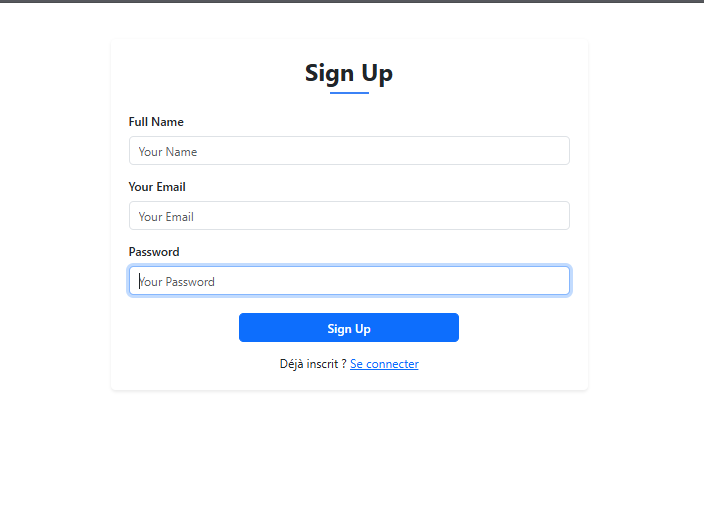
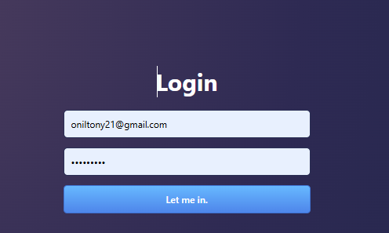
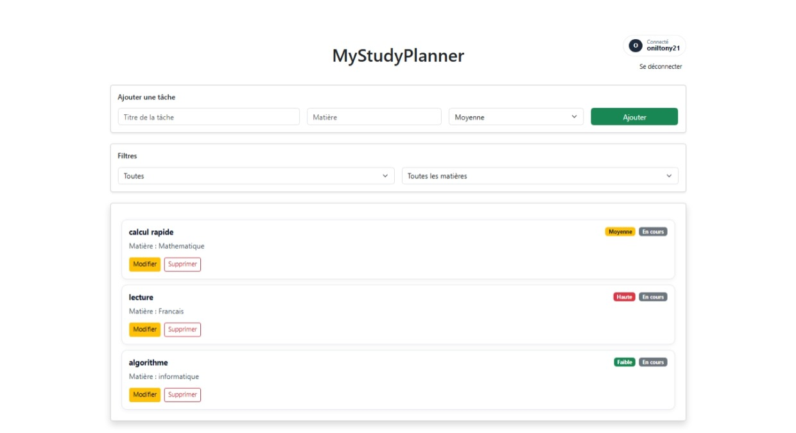

MyStudyPlanner
MyStudyPlanner est une plateforme web destinée à aider les étudiants à organiser leur travail académique et à gérer leurs tâches.
Présentation
MyStudyPlanner est une application web conçue pour aider les étudiants à organiser leurs tâches académiques. Le projet met en œuvre un système d'authentification, la gestion des tâches ainsi que des fonctionnalités de filtrage et de suivi de leur état.
Fonctionnalités
Authentification
Création de compte et connexion sécurisée avec mot de passe chiffré et token JWT.
Tableau de bord
Tableau de bord personnel affichant les informations de l'utilisateur connecté.
Gestion des tâches
Ajout, modification et suppression des tâches avec matière et niveau de priorité.
Suivi des tâches
Marquage des tâches comme terminées ou en cours afin de suivre leur progression.
Filtres
Filtrage des tâches par statut et par matière.
Affichage visuel
Identification visuelle des priorités et de l'état des tâches.
Captures d'écran


